Patriotic Employer Award, Pro Partia Award,
Above and Beyond Award
Employer Support of the Guard and Reserve (ESGR)
Patriotic Employer Award, Pro Partia Award, Above and Beyond Award
Employer Support of the Guard and Reserve (ESGR)
Best Places to work
St. Louis
Business Journal
2014-2020
Top Workplaces
The St. Louis
Post Dispatch
2018-2020
Top Workplace
Award
Social Survey
2018
Best Mortgage
Companies to Work For
National Mortgage News
2019
SocialSurvey rating
4.9
Glassdoor rating
4.5
10 Lives, 10 Stories, One Message was a competition to elicit and share compelling human-interest stories that demonstrate the power of social and behavior change (SBC) to improve family planning and reproductive health (FP/RH) outcomes.
A panel of judges composed of experts in SBC and reproductive health from USAID, FP2030, and Breakthrough ACTION selected ten winners whose stories were turned into videos and written briefs.
Employee Stock Ownership Program (ESOP)
Improving SBC for service delivery
SBC is an underutilized tool for improving family planning service delivery
Video Stories
First Place Winners
• Grandmother Project: Change Through Culture
• ZanaAfrica
• Pathfinder International
• Abt Associates
• HealthRight International
Second Place Winners
• The Institute of Reproductive Health at Georgetown University
• GOAL Sierra Leone
• Family Planning Association of Malawi
• IntraHealth International
• MOMENTUM Integrated Health Resilience
The first-place winners worked with Radiant Media Collaborative to create short videos that brought their stories to life. Second-place winners worked with Breakthrough ACTION to develop stories into technical briefs that grow the body of knowledge in the field of SBC.
Focus areas of national Costed Implementation Plans (CIPs) and annual action plans
Competition Winners
Result
Written Stories
• Motivation
• Satisfaction
• Norms
We need to work together to:
Motivate demand for family planning before seeking services
1
Hover on graph to explore how SBC improves health outcomes thoughout the Circle of Care
In many cases, social change cuts across multiple health and development sectors and can serve as an opportunity to promote greater program integration
Enhance understanding of the provider perspective, including:
Better coordinate SBC and service delivery investments
Compile more evidence about effective provider behavior change approaches
Agree upon, adhere to, and report according to a uniform bank of process, output, outcome, and impact indicators, disaggregated by sex and age as necessary
Strengthen the links between actors working at a variety of levels, including:
• Individual-level behavior change
• Policy and structural change
• Norms shifting and gender
transformative interventions
• Human rights advocacy
• Community health
Seek consensus on a prioritized set of measurement indicators and processes to measure social change
Increase attention to ethical considerations related to shifting social and gender norms and broad social change
Apply existing social change theories to program design
Improve our capacity to identify, respond to, and measure our progress in addressing social and gender factors that impact family planning outcomes
Normative dimensions
1
Policy and structural factors
2
Social accountability
3
In many cases, social change cuts across multiple health and development sectors and can serve as an opportunity to promote greater program integration
Social change includes a mix of approaches in:
We need to work together to:
Employee Stock Ownership Program (ESOP)
Supporting social change for family planning
Greater emphasis on social change is critical to achieving family planning goals
Seek out innovations in referral systems (e.g., mobile-based referrals) to overcome service-seeking barriers using SBC approaches.
Improve quality of care with better client experience and improved provider attitudes and behaviors
Improve the client-provider interaction during service delivery
2
Support family planning use
after services are received
3
Expert stakeholder consultations
Recent evidence
summaries
Document effective integrated programs that meet young people’s needs for positive youth development, including:
• Meaningful employment
• Safety
• A gender equitable world
Prioritize youth as a cross-cutting issue across family planning programs, rather than as a separate program discipline
Increase youth-driven SBC programs and meaningful youth engagement and partnership
Learn, in real time, what other partners are testing, what works, and what does not work
Girls under the age of 18 who give birth in
low- and middle-income countries every day
20k
Pregnancy and childbearing in adolescence carry significant health risks. While a majority of national Costed Implementation Plans for family planning include youth as a priority population — and many donors have made significant investments in this area — work is not always aligned and the results are not consistently shared.
Social change includes a mix of approaches in:
We need to work together to:
Employee Stock Ownership Program (ESOP)
Understanding and meeting the needs of youth
Greater alignment and information sharing is needed to meet the family planning needs of young people
Improve segmentation of youth to understand their different needs, preferences and challenges, as well as behavioral patterns across the life course
Ages where pregnancy-related complications
are the leading cause of death among girls
15 to 19 years
3
Improve understanding and appreciation of high-quality SBC, its cost-effectiveness, and its return on investment
Girls under the age of 18 who give birth in
low- and middle-income countries every day
20k
Current investments are insufficient, particularly at the country level, to support the implementation of high-quality SBC as a proven intervention to achieve family planning goals. Notably, many donors and governments vary in their understanding of and appreciation for SBC, leading to uneven support.
Social change includes a mix of approaches in:
We need to work together to:
Employee Stock Ownership Program (ESOP)
Increasing coordinated investments in SBC for family planning
SBC is not yet anchored as a core element of family planning in major development organizations or in government planning mechanisms, such as Costed Implementation Plans
Build appreciation for SBC as an essential component of national family planning strategies
Increase use of shared measurement indicators to allow comparison of program evaluations
Make a targeted effort to improve the coordination of SBC investments to maximize existing resources
Advocate for full funding of SBC elements within Costed Implementation Plans and other national strategies
Increase appreciation among governments, donors, and implementers of how investing in SBC contributes to the achievement of regional and national family planning goals
Ouagadougou Partnership countries: Benin, Burkina Faso, Côte d’Ivoire, Guinea, Mali, Mauritania, Niger, Senegal, and Togo
9
New contraceptive users between 2015 & 2018
1.4M
Social change includes a mix of approaches in:
We need to work together to:
Employee Stock Ownership Program (ESOP)
Focusing on Francophone West Africa
The Ouagadougou Partnership countries pledged to reach 2.2 million additional family planning users by 2020, but funding is limited for demand generation
Implement high-quality SBC interventions by advancing SBC technical capacity in the region
Invest in demand-side approaches, including social norms awareness and, where appropriate, norms shifting and gender transformative interventions
Increase youth-led and youth-centered SBC for family planning
Improve coordination of SBC investments and activities in the region to avoid duplication of efforts and address gaps
New users needed to reach the 2020 goals
817k
Of the Ouagadougou Partnership donor funding focuses on demand, including SBC
12%
5
4
+ Hover for more info
Written Stories
Resources
1. Rosen, J. E., Bellows, N., Bollinger, L., Plosky, W. D., & Weinberger, M. (2019). The business case for investing in social and behavior change for family planning. Washington, DC: Population Council.
2. Huezo, C., & Diaz, S. (1993). Quality of care in family planning: clients’ rights and providers’ needs. Advances in Contraception, 9(2), 129–139. Retrieved from: https://doi.org/10.1007/BF01990143
3. World Health Organization. (2012). Preventing early pregnancy and poor reproductive outcomes among adolescents in developing countries: What the evidence says. Geneva, Switzerland: World Health Organization.
4. Adding it up: Investing in contraception and maternal and newborn health in the Ouagadougou Partnership countries. (2018). Retrieved from https://www.guttmacher.org/fact-sheet/adding-it-up-contraception-mnh-ouagadougou-partnership
5. Based on analysis by Camber Collective (2019).
+ Footnotes

The Global Shared Agenda for SBC in Family Planning was one of three shared agendas created.
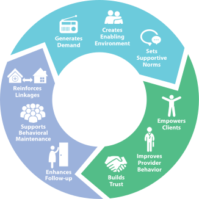
• Vivamus ac vehicula sem
• Praesent faucibus
• Acus id suscipit vestibulum
• Lorem mauris aliquam nisl,
• Vestibulum ligula nunc at tortor
tincidunt dui eget elit
• Commodoa molestie enim
• Etiam et uisque luctus lacus
• Tempus ligula tincidunt sit amet
• Ut tincidunt ante purusat
scelerisque mi cursus vel
• Morbi laoreet dui
• Acus id suscipit vestibulum
• Morbi laoreet dui
• Vestibulum ligula nunc at tortor
tincidunt dui eget elit
• Commodoa molestie enim
• Etiam et uisque luctus lacus
• Tempus ligula tincidunt sit amet
• Scelerisque mi cursus vel
• Morbi laoreet dui
• Acus id suscipit vestibulum
• Lorem mauris aliquam nisl,
• Vestibulum ligula nunc at tortor
• Commodoa molestie enim
• Etiam et uisque luctus lacus
Sample Text
Competition Winners
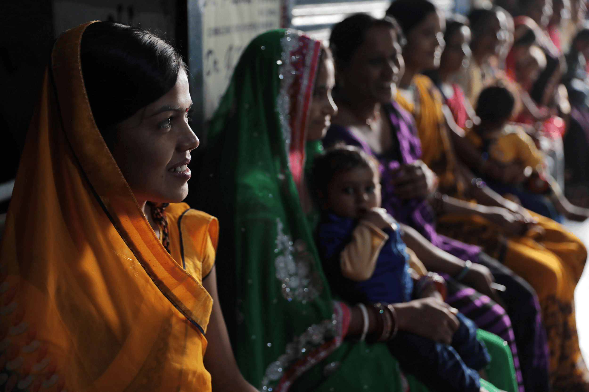
Competition Winners
Video Stories
Watch the extraordinary stories of the following organizations.
Georgetown University's Institute for Reproductive Health used social network approaches both to identify female and male influencers to facilitate the spread of new ideas and behaviors.
English
Español
Français
Português
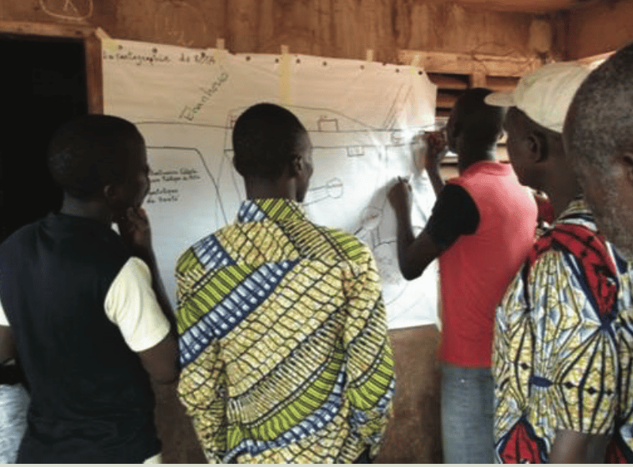
Français
Español
English
Português
IntraHealth International used multiple complementary SBC approaches implemented by trusted health workers to improve family planning outcomes.
Français
Español
English
Português
MOMENTUM Integrated Health Resilience promoted women's empowerment and improved adolescents' access to reproductive health and family planning.
Francais
Español
English
Português
Family Planning Association of Malawi generated demand for family planning and improved adolescent reproductive health.
Français
Español
English
Português
GOAL Sierra Leone promoted positive social norms to reduce unwanted adolescent pregnancies.
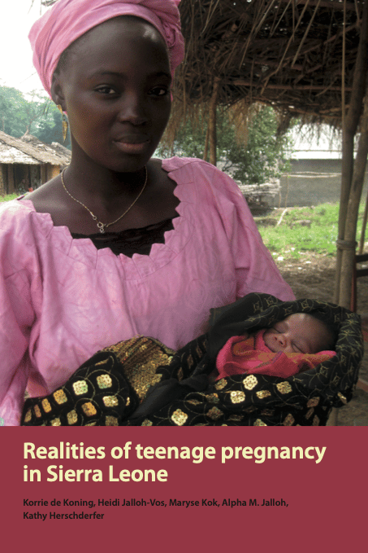
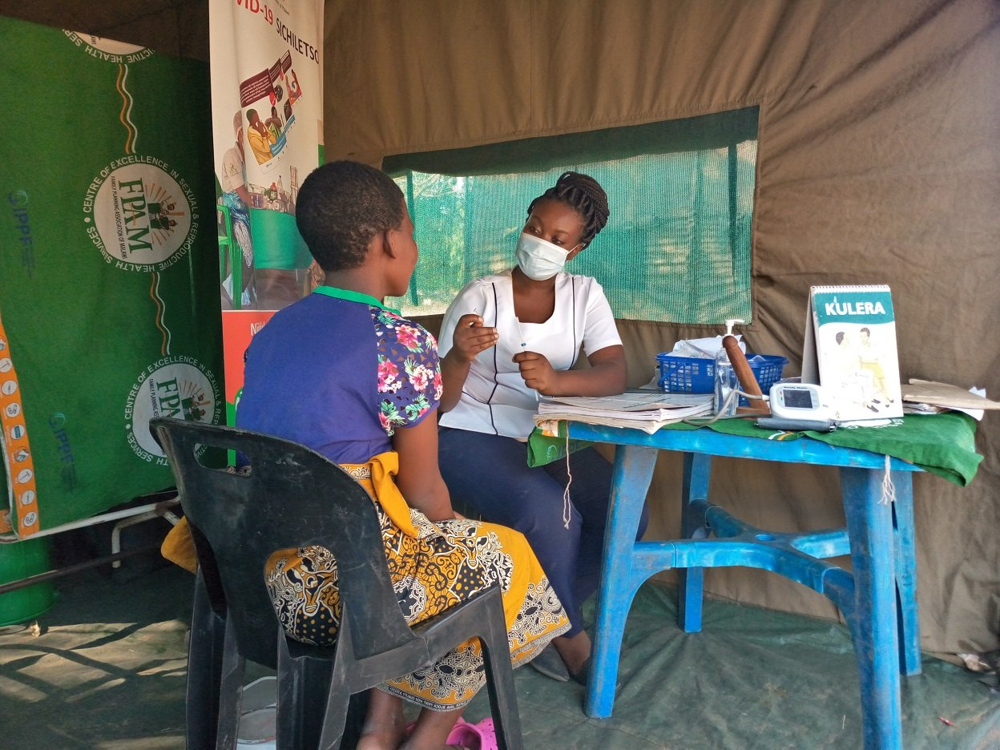

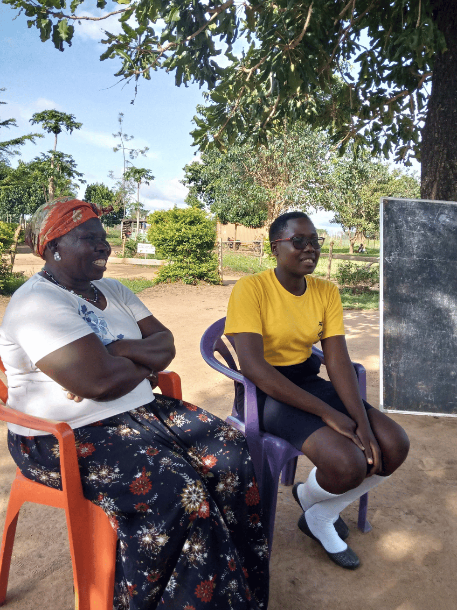
Français
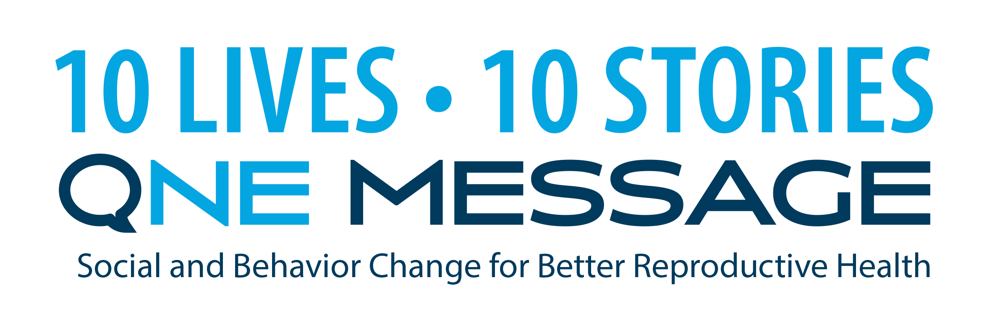
Français
Español
English
Português
Grandmother Project: Change Through Culture in Senegal used SBC to empower grandmothers to be respected change agents in their communities and advocate for their grandchildren.
Français
Español
English
Português
ZanaAfrica used community-driven, story-based SBC solutions to promote positive gender norms and reduce stigma to improve adolescent health.
Français
Español
English
Português
Pathfinder worked with influential community and religious leaders to use SBC approaches to encourage their peers to consider family planning.
Français
Español
English
Português
Abt Associates SHOPS Plus' campaign shows that meeting your audience where they're at can empower them to make informed choices.
Français
Español
English
Português
HealthRight International's work affirms that providing inclusive education and care to the most disconnected members of one's community and engaging all of its members can transform families.
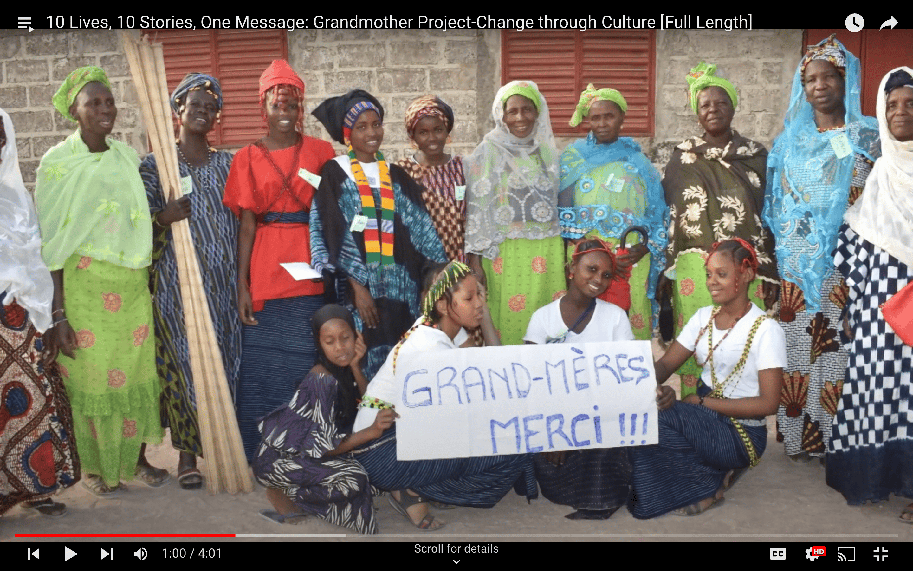
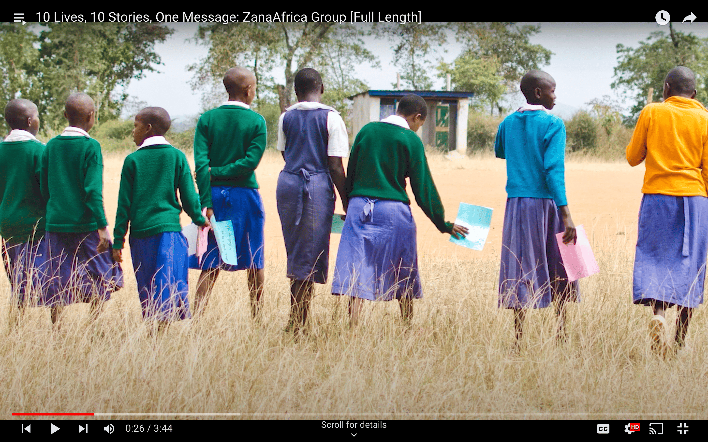
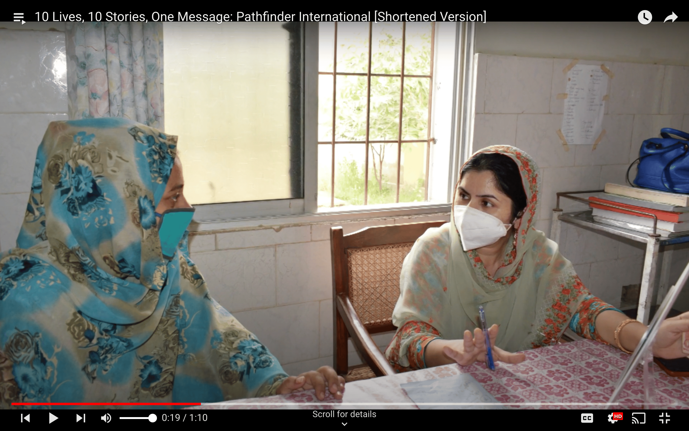
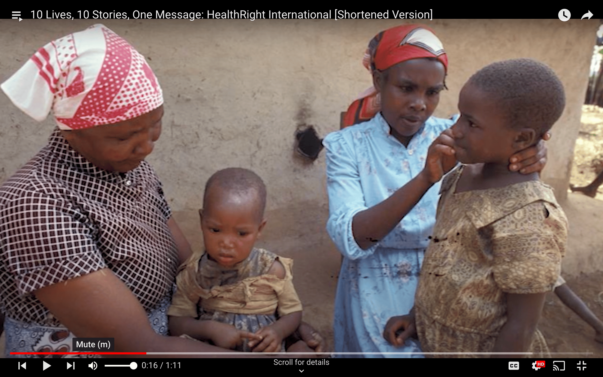
to be notified when the videos are available with French, Spanish, and Portuguese subtitles.
Sign up